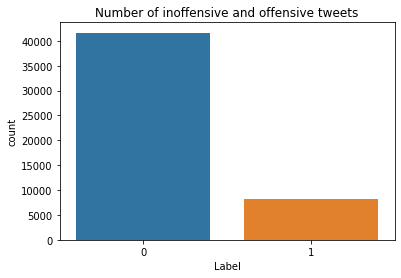
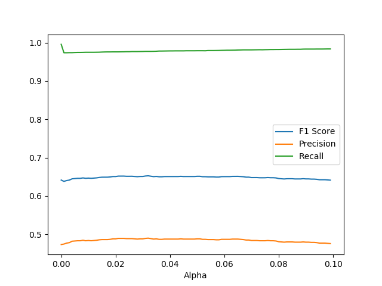
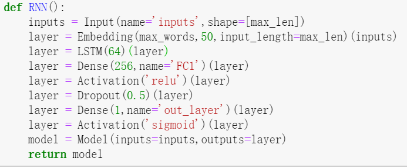

Introduction
One of the problems for social media is that some users take advantage of their anonymity and make inappropriate remarks, which significantly destroy other users' experience. Given the tremendous amount of information produced each day, social media platforms must implement machine learning algorithms to filter out offensive remarks and insults that target certain individuals/groups. However, it's difficult to find every insulting remarks. While it's easy to find the shorter ones with explicit profanity, longer sentences that makes implicit attacks are more difficult to detect.
This project aims to implement some of the most common text classification algorithms. For example, Naive Bayes (aka NB) and Logistic Regression (aka LR) are implemented, as well as more sophisticated Neural Network methods. I hope that this project can help the persons or organizations who are studying text classification algorithms. Social media platforms, for example, might gain some inspiration from this project.
Simple methods, such as NB and LR, can reached a baseline f1-score of about 0.60 without pre-processing. I'm currently using pre-processed different words as tokens, and the f1-score of NB and LR can be improved to about 0.65. For Long short-term memory (aka LSTM), its f1-score can be further improved to 0.75, and its accuracy can reach 0.93.
Data
The data is from codalab, from the competition OffensEval 2020. It contains tweets that are labelled in different dimensions, including: offensive/not offensive, targeted insult/untargeted insult, Individual Offended/Group Offended/Other. I'm mainly utilizing the first part of the dataset to study different classification algorithms.
You can find the description of the competition from this link. Currently, the top rankings in the competition have an f1-score of about 0.8. In my experiment, I have reached an f1-score of 0.75, which I think is satisfactory.

In the data-set, each row corresponds to a tweet, which contains tweet id and text, the average evaluated possibility of being offensive, and the standard deviation of the possibility. The possibilities and the deviations are calculated by algorithms developed by the organizers. For example, here are some randomly selected tweets.
| Tweet Id | Text | Rate Avg. | Rate Std. |
|---|---|---|---|
| '1159535691728072704' | '@USER @USER Full of energy' | '0.34036496405604627' | '0.24866228211190125' |
| '1159535717107867648' | "City of star's, are you shining just for me? \#LALALAND" | '0.1691586600488356' | '0.18264453051536975' |
| '1159536014668419073' | 'Absolute silence leads to sadness. It is the image of death.' | '0.4389209569209914' | '0.08702695703269699' |
| '1159536115411537928' | "@USER I hope they'll do another one for the last season" | '0.15913752389521013' | '0.1900078213012225' |
Methods
First, for pre-processing part, I converted the tsv files to more machine-friendly formats, and deleted the useless information. Each tweet is given together with its id, which makes little use in this project, therefore I deleted it. Also, the average evaluated possibility of being offensive are given in the format of float number in range (0,1), therefore I converted all the numbers less than 0.5 to become 0, and all the numbers larger than 0.5 to become 1. The float numbers are deleted as well. This is how I got the first copy of training set. Meanwhile, I created the second copy by removing the stop-words using nltk library. Since the text is from Twitter, I also modified some @USER, hashtag notations and emojis. I trained two models on these two copies of training sets to see the effect of pre-processing.
Next, I applied NB and LR methods to the data. For NB, I adjusted the alpha value to see how it changes the Accuracy, Precision and Recall value. For LR, I adjusted the iteration number and learning rate to see whether the models have converged, and how Accuracy, Precision and Recall value changes.
I implemented the LSTM model based on Keras. It's a neural network with one hidden layer. I used ReLu as the activation function for the first layer, and sigmoid for the output layer. After multiple experiments, I found that an dropout of 0.5 works well.
Results and Discussions
The dataset is biased. About 83.5% of the tweets are not offensive. Therefore, if we constantly predict that the test set to be inoffensive, we can reach 85.5% accuracy. In contrast, LSTM can reach accuracy higher than 93%. This is the plot of precision, recall and f1-score for Naive Bayes. The x axis is alpha, which is in the range of (0,0.1), with 100 steps. 
As we can see, the Recall is very high. It's about 0.99. However, the Precision is relatively low, and it's about 0.45. The low precision results in a low f1-score. As for Logistic Regression, the F1-score is also about 0.65. I set the iteration numbers to be 1000, and tried different learning rates.
| Learning Rate | Precision | Recall | F1-Score |
|---|---|---|---|
| 5e-4 | 0.477 | 0.997 | 0.645 |
| 5e-5 | 0.482 | 0.999 | 0.650 |
| 5e-6 | 0.196 | 0.999 | 0.328 |
Clearly, the model has not converged when the learning rate is 5e^-6. The other two cases indicate that the model has a f1 score of about 0.65.
As for LSTM, I planned to plot a ROC-AUC curve, but it's difficult to train multiple model because the training takes quite long time. I chose three different dropout rates to see the influence of hyperparameters. It seems that it's reasonable to set dropout rate to be 0.5. This is the structure of my LSTM model.

| Dropout Rate | Precision | Recall | F1-Score | Accuracy |
|---|---|---|---|---|
| 0.3 | 0.966 | 0.623 | 0.757 | 0.934 |
| 0.5 | 0.938 | 0.645 | 0.765 | 0.934 |
| 0.6 | 0.934 | 0.623 | 0.747 | 0.932 |
What’s Next
I trained my models on my old-fashioned Laptop. For LR and NB, the time spent in training is acceptable. However, for LSTM, it takes quite some time to converge. Therefore, I had to limit the size of the training set. If I could train my model on another platform (on the cloud or on an up-to-date PC, for example), I can explore the effects of other possible hyper-parameters and different structures. This is what I'm planning to do in future.